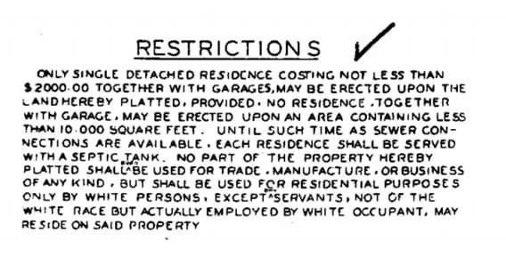

Identity, History & Fair Housing
Real estate directly shapes our neighborhood maps, family stability, and long-term security. This space is intentionally designed to deliver transparent access to financial pathways, layout historical tracking data, and support an inclusive path to homeownership for everyone.
"Banning discrimination based on religion and race in the rental or sale of homes is how we build communities where everyone can live wherever they please."Inspired by Sam Smith, WA State Representative who introduced the state's first open housing legislation to challenge systemic local redlining.
"We need to pass fair housing rules now. A person's skin color or national origin should never dictate what neighborhood backyard their children can play in."Inspired by Wing Luke, the first Asian American elected to public office in the Pacific Northwest and a relentless advocate for civil rights and urban integration.
"Protecting people from housing discrimination based on who they love or how they identify isn't extra treatment—it is establishing standard human dignity."Inspired by the pioneering housing inclusion works of Cal Anderson and Marsha Botzer, who established early protections for the LGBTQ+ community.
Modern Realities & Uncomfortable Truths
It is comfortable to treat fair housing hurdles as simple, solved relics of the mid-20th century, but modern undercover field studies reveal that systemic steering, implicit bias, and unequal financing requirements continue to present challenges for home buyers today.
Stewardship means looking at these modern tracking realities directly, offering completely un-biased and open neighborhood data, and treating the consumer interests of every single buyer with the same level of protection.
The Legacy of Restrictive Covenants
Between 1910 and 1960, developers and neighborhood associations across King and Snohomish Counties stamped explicit discriminatory clauses directly into local plat maps and property deeds. Known as racial restrictive covenants, these agreements legally blocked minority groups from purchasing, renting, or occupying residential homes across entire subdivisions.

The federal Fair Housing Act of 1968 rendered these provisions completely illegal and void, but the text remains embedded inside thousands of historic local land files. Pulling your title policy and seeing these terms can be an incredibly jarring experience.
My Offer to the Community
You should not have to carry an active stamp of discrimination inside your home's historic public record. Washington State law provides a direct mechanism to strike this text. If you own a home locally and your historic chain of title contains a racial restrictive covenant, I am offering to manage the modification tracking for you completely free of charge:
- Title Registry Research: I will fully request and pull your property’s original historical deed documents through the title registry network to verify if an entry exists.
- Modification Document Prep: I will complete and prepare the official Restrictive Covenant Modification paperwork required by your specific county recording division.
- Filing & Delivery: I will arrange any necessary mobile notary steps and submit the finalized files directly to the King County Recorder or Snohomish County Auditor at zero cost to you.
Reparative Homeownership Pathways
Closing homeownership wealth gaps requires translating historical awareness into actionable access to modern financing platforms. Multiple public trust funds, state grants, and community down payment tracks exist to help expand purchasing power for impacted households and first-generation buyers.
Covenant Homeownership Program
A specialized statewide program providing closing cost and down payment assistance loans to homebuyers who can trace Washington State residency prior to 1968, directly addressing the impact of historic redlining.
Sam Smith "Hi Neighbor" Fund
A deferred assistance second mortgage track designed by HomeSight to build real estate equity and lower down payment friction specifically for moderate-income minority buyers within regional urban centers.
Let's Build Your Lending Team
Identifying assistance tools or mapping your community options is only the first step. Safely integrating down payment assistance, grants, or deferred loans into a standard mortgage pre-approval requires a lending team that understands the operational landscape inside and out.
Get in touch with me today and I will connect you with trusted, local mortgage professionals who prioritize community programs, giving you clear, transparent financing options without any corporate sales pressure.
Connect with Joe